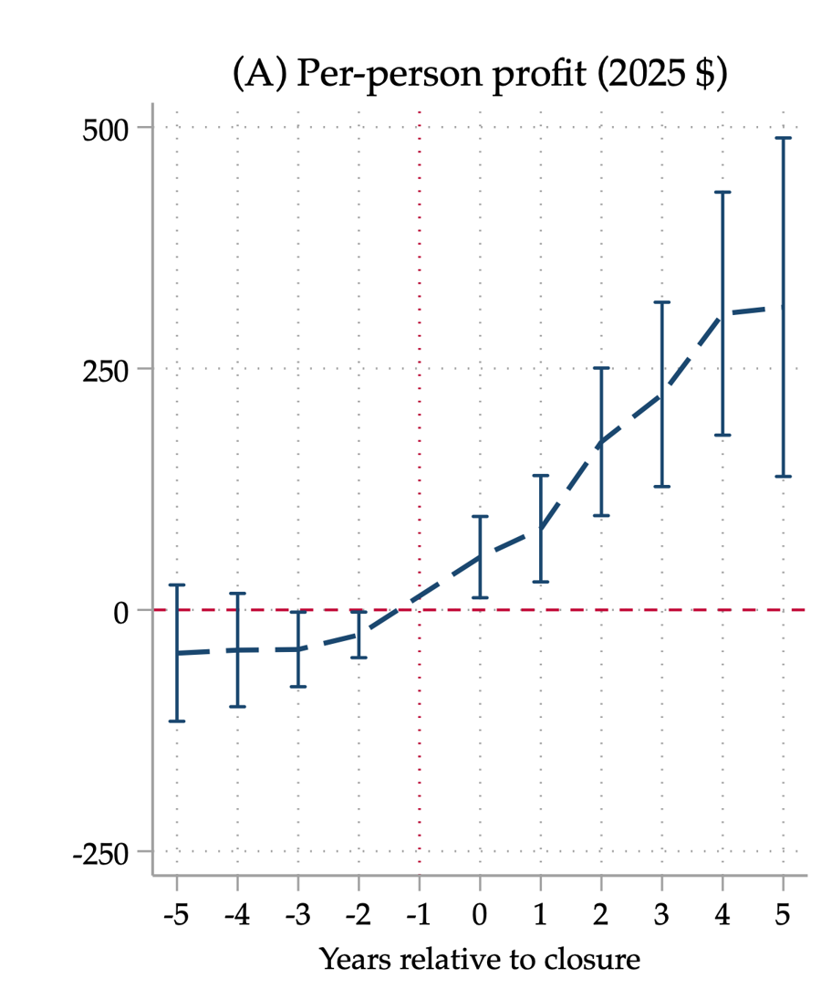

Deadpooling: Strategic Lock-In in the Medigap Market
Abstract
Adverse selection is a well-known problem in health insurance markets. To prevent consumers from delaying coverage until they need high levels of care and prevent firms from extracting rents on people with high demand for insurance, governments may implement a series of regulations to constrain both buyers and sellers. This paper examines a case of this in the Medicare Supplement market. Linking two decades of Medicare Supplement filings to annual parent–subsidiary ownership records, we document deadpooling, a novel financial practice where insurers use corporate structure to circumvent regulation and extract rents from high-risk consumers. 17.6% of Medigap life-years are spent in plans that deadpool, and each year closures transfer $64.7 million from seniors to insurer profits. Harm to consumers accrues through increased payments to insurers, switching costs, and the change in consumer surplus due to loss of coverage among beneficiaries priced out of the market who cannot get plans from other insurers. We estimate annual lost consumer surplus from deadpooling to total $129.4 million. Each dollar of deadpooling markup collected by insurers costs seniors $2 in surplus. This extraction is a choice rather than the arithmetic of an aging pool. Using a natural experiment in which a federal statute effectively closed some types of plan to new enrollment, we find that deadpooling plans reprice much more aggressively than plans that close by statute. We find that expanding switching rights, an intervention that would eliminate this harm in a market with perfectly rational consumers, only reduces deadpooling by 18%. We explain this finding as a consequence of consumer inattention using a demand-side simulation. We examine alternative solutions that do not rely on consumer attention, and find that these reduce harm by up to 53%, against 5% for expanded switching rights.